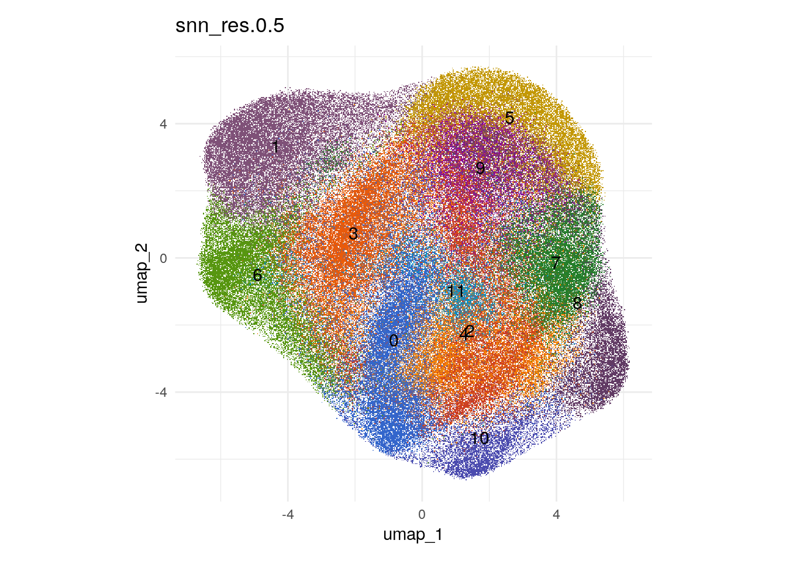
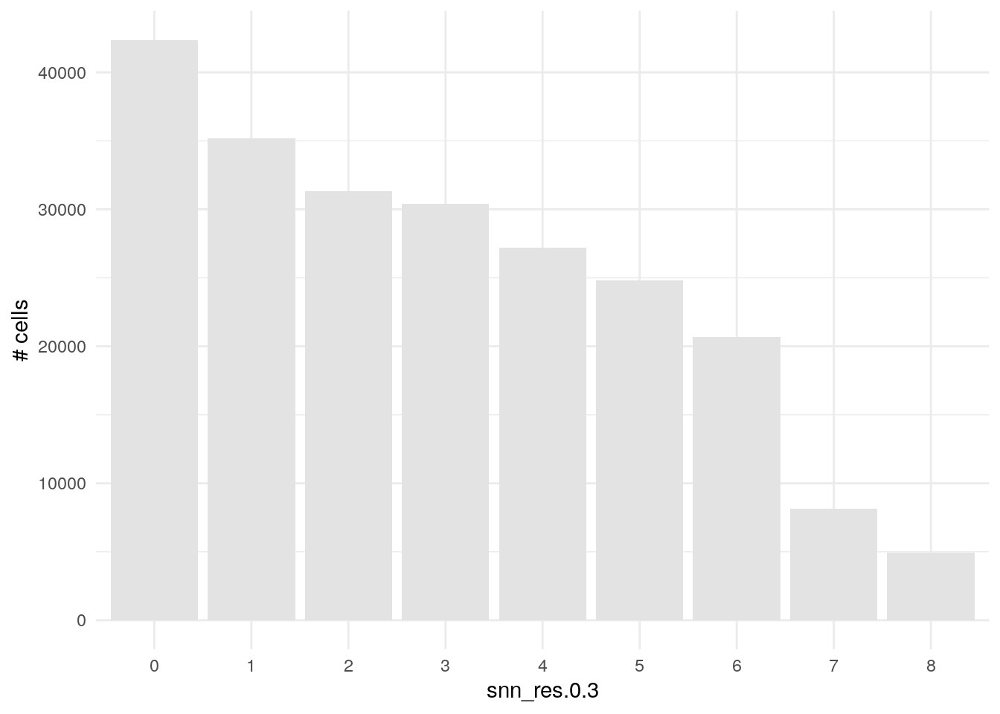
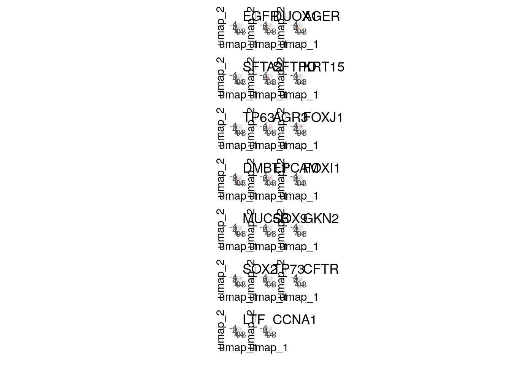
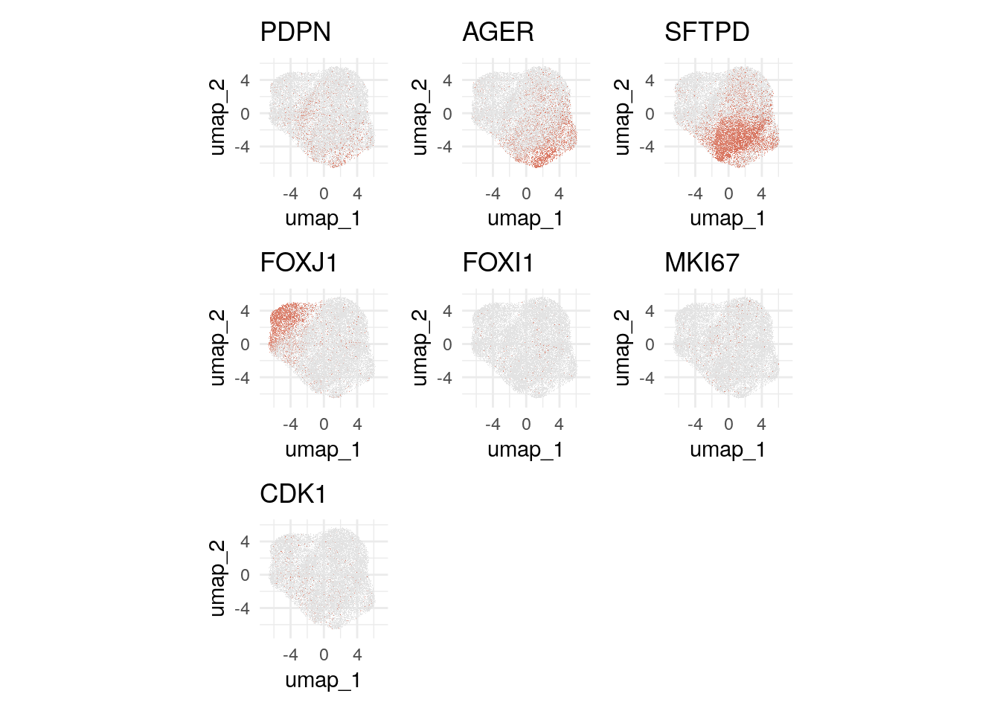
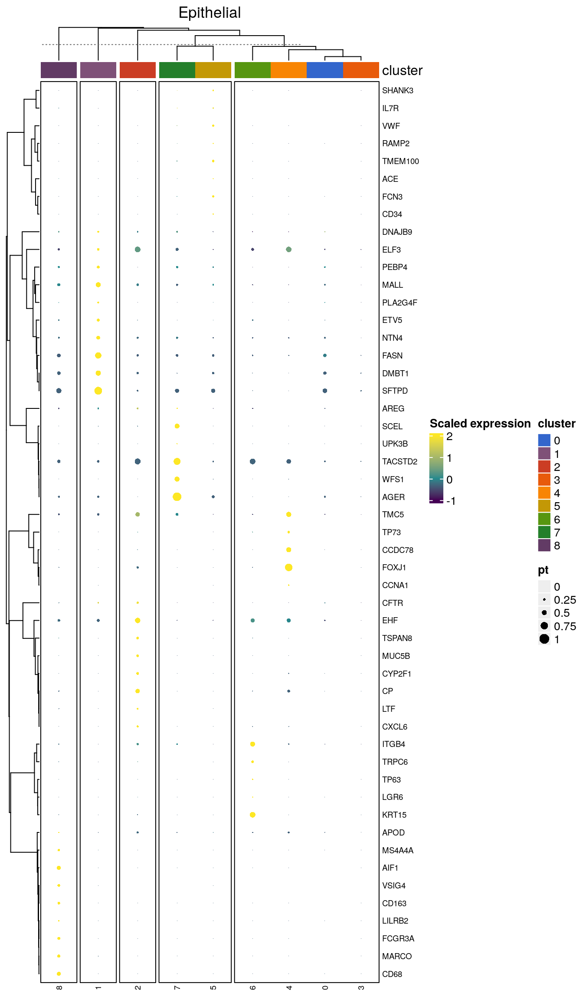
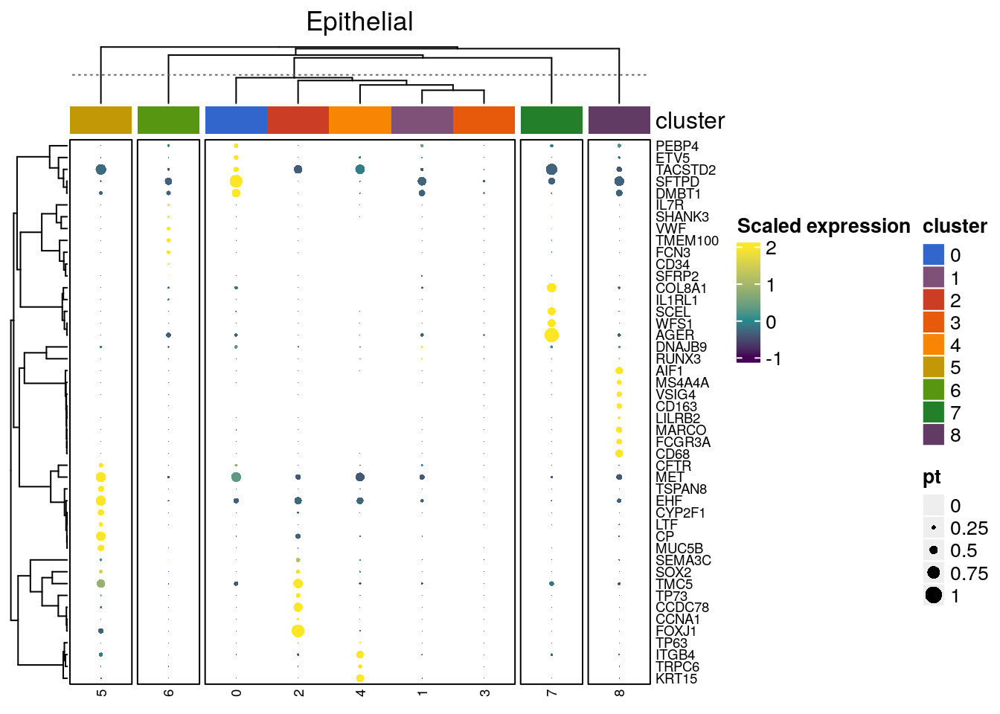

Last updated: 2023-12-18
Checks: 5 2
Knit directory: ILD_ASE_Xenium/
This reproducible R Markdown analysis was created with workflowr (version 1.7.1). The Checks tab describes the reproducibility checks that were applied when the results were created. The Past versions tab lists the development history.
The R Markdown is untracked by Git. To know which version of the R
Markdown file created these results, you’ll want to first commit it to
the Git repo. If you’re still working on the analysis, you can ignore
this warning. When you’re finished, you can run
wflow_publish to commit the R Markdown file and build the
HTML.
Great job! The global environment was empty. Objects defined in the global environment can affect the analysis in your R Markdown file in unknown ways. For reproduciblity it’s best to always run the code in an empty environment.
The command set.seed(20231206) was run prior to running
the code in the R Markdown file. Setting a seed ensures that any results
that rely on randomness, e.g. subsampling or permutations, are
reproducible.
Great job! Recording the operating system, R version, and package versions is critical for reproducibility.
Nice! There were no cached chunks for this analysis, so you can be confident that you successfully produced the results during this run.
Using absolute paths to the files within your workflowr project makes it difficult for you and others to run your code on a different machine. Change the absolute path(s) below to the suggested relative path(s) to make your code more reproducible.
| absolute | relative |
|---|---|
| /home/hnatri/ILD_ASE_Xenium/ | . |
| /home/hnatri/ILD_ASE_Xenium/code/colors_themes.R | code/colors_themes.R |
| /home/hnatri/ILD_ASE_Xenium/code/plot_functions.R | code/plot_functions.R |
| /home/hnatri/ILD_ASE_Xenium/code/utilities.R | code/utilities.R |
Great! You are using Git for version control. Tracking code development and connecting the code version to the results is critical for reproducibility.
The results in this page were generated with repository version acc35d5. See the Past versions tab to see a history of the changes made to the R Markdown and HTML files.
Note that you need to be careful to ensure that all relevant files for
the analysis have been committed to Git prior to generating the results
(you can use wflow_publish or
wflow_git_commit). workflowr only checks the R Markdown
file, but you know if there are other scripts or data files that it
depends on. Below is the status of the Git repository when the results
were generated:
Ignored files:
Ignored: analysis/celltype_annotations.html
Untracked files:
Untracked: analysis/epithelial_annotations.Rmd
Untracked: analysis/immune_annotations.Rmd
Unstaged changes:
Modified: analysis/Xenium_preprocessing.Rmd
Modified: analysis/celltype_annotations.Rmd
Modified: analysis/index.Rmd
Modified: analysis/post_clustering.Rmd
Modified: code/colors_themes.R
Modified: code/plot_functions.R
Modified: code/utilities.R
Note that any generated files, e.g. HTML, png, CSS, etc., are not included in this status report because it is ok for generated content to have uncommitted changes.
There are no past versions. Publish this analysis with
wflow_publish() to start tracking its development.
suppressPackageStartupMessages({library(cli)
library(Seurat)
library(SeuratObject)
library(SeuratDisk)
library(tidyverse)
library(tibble)
library(ggplot2)
library(ggpubr)
library(ggrepel)
library(workflowr)
library(googlesheets4)
library(presto)})Loading Seurat v5 beta version
To maintain compatibility with previous workflows, new Seurat objects will use the previous object structure by default
To use new Seurat v5 assays: Please run: options(Seurat.object.assay.version = 'v5')setwd("/home/hnatri/ILD_ASE_Xenium/")
set.seed(9999)
options(ggrepel.max.overlaps = Inf)
# Colors, themes, cell type markers, and plot functions
source("/home/hnatri/ILD_ASE_Xenium/code/colors_themes.R")
source("/home/hnatri/ILD_ASE_Xenium/code/plot_functions.R")
source("/home/hnatri/ILD_ASE_Xenium/code/utilities.R")epithelial_merged <- readRDS("/scratch/hnatri/ILD/ILD_spatial_ASE/epithelial_merged.rds")
DefaultAssay(epithelial_merged)[1] "RNA"epithelial_reclustered <- recluster(epithelial_merged)# PCs for UMAP: 11Warning: The default method for RunUMAP has changed from calling Python UMAP via reticulate to the R-native UWOT using the cosine metric
To use Python UMAP via reticulate, set umap.method to 'umap-learn' and metric to 'correlation'
This message will be shown once per sessionUMAP will return its model23:58:02 UMAP embedding parameters a = 0.9922 b = 1.112Found more than one class "dist" in cache; using the first, from namespace 'spam'Also defined by 'BiocGenerics'23:58:02 Read 225038 rows and found 11 numeric columns23:58:02 Using Annoy for neighbor search, n_neighbors = 30Found more than one class "dist" in cache; using the first, from namespace 'spam'Also defined by 'BiocGenerics'23:58:02 Building Annoy index with metric = cosine, n_trees = 500% 10 20 30 40 50 60 70 80 90 100%[----|----|----|----|----|----|----|----|----|----|**************************************************|
23:58:22 Writing NN index file to temp file /tmp/RtmppHGpKV/file1065c623385b46
23:58:23 Searching Annoy index using 1 thread, search_k = 3000
00:00:14 Annoy recall = 100%
00:00:15 Commencing smooth kNN distance calibration using 1 thread with target n_neighbors = 30
00:00:20 Initializing from normalized Laplacian + noise (using RSpectra)
00:00:26 Commencing optimization for 200 epochs, with 9276138 positive edges
00:02:12 Optimization finished
Computing nearest neighbor graph
Computing SNNModularity Optimizer version 1.3.0 by Ludo Waltman and Nees Jan van Eck
Number of nodes: 225038
Number of edges: 5029819
Running Louvain algorithm...
Maximum modularity in 10 random starts: 0.9182
Number of communities: 2
Elapsed time: 105 seconds
Modularity Optimizer version 1.3.0 by Ludo Waltman and Nees Jan van Eck
Number of nodes: 225038
Number of edges: 5029819
Running Louvain algorithm...
Maximum modularity in 10 random starts: 0.8852
Number of communities: 5
Elapsed time: 105 seconds
Modularity Optimizer version 1.3.0 by Ludo Waltman and Nees Jan van Eck
Number of nodes: 225038
Number of edges: 5029819
Running Louvain algorithm...
Maximum modularity in 10 random starts: 0.8686
Number of communities: 9
Elapsed time: 107 seconds
Modularity Optimizer version 1.3.0 by Ludo Waltman and Nees Jan van Eck
Number of nodes: 225038
Number of edges: 5029819
Running Louvain algorithm...
Maximum modularity in 10 random starts: 0.8464
Number of communities: 12
Elapsed time: 106 seconds
Modularity Optimizer version 1.3.0 by Ludo Waltman and Nees Jan van Eck
Number of nodes: 225038
Number of edges: 5029819
Running Louvain algorithm...
Maximum modularity in 10 random starts: 0.8205
Number of communities: 16
Elapsed time: 109 seconds
Modularity Optimizer version 1.3.0 by Ludo Waltman and Nees Jan van Eck
Number of nodes: 225038
Number of edges: 5029819
Running Louvain algorithm...
Maximum modularity in 10 random starts: 0.8083
Number of communities: 19
Elapsed time: 124 secondsDimPlot(epithelial_reclustered,
group.by = "snn_res.0.3",
reduction = "umap",
raster = T,
cols = cluster_col,
label = T) +
coord_fixed(ratio = 1) &
theme_minimal() &
NoLegend()Rasterizing points since number of points exceeds 100,000.
To disable this behavior set `raster=FALSE`
# Numbers of cells per cluster
table(epithelial_reclustered$snn_res.0.3) %>% as.data.frame() %>%
ggplot(aes(x = Var1, y = Freq)) +
geom_bar(stat="identity", fill = "gray89") +
xlab("snn_res.0.3") +
ylab("# cells") +
theme_minimal()
# All epithelial markers
FeaturePlot(epithelial_reclustered,
features = epithelial_features,
ncol = 3,
reduction = "umap",
raster = T,
cols = c("gray89", "tomato3")) &
coord_fixed(ratio = 1) &
theme_minimal() &
NoLegend()Warning: The following requested variables were not found (10 out of 38 shown):
NKX2-1, RTKN2, NAPSA, PGC, SFTPC, KRT14, KRT5, KRT6A, S100A2, KRT17Rasterizing points since number of points exceeds 100,000.
To disable this behavior set `raster=FALSE`
Rasterizing points since number of points exceeds 100,000.
To disable this behavior set `raster=FALSE`
Rasterizing points since number of points exceeds 100,000.
To disable this behavior set `raster=FALSE`
Rasterizing points since number of points exceeds 100,000.
To disable this behavior set `raster=FALSE`
Rasterizing points since number of points exceeds 100,000.
To disable this behavior set `raster=FALSE`
Rasterizing points since number of points exceeds 100,000.
To disable this behavior set `raster=FALSE`
Rasterizing points since number of points exceeds 100,000.
To disable this behavior set `raster=FALSE`
Rasterizing points since number of points exceeds 100,000.
To disable this behavior set `raster=FALSE`
Rasterizing points since number of points exceeds 100,000.
To disable this behavior set `raster=FALSE`
Rasterizing points since number of points exceeds 100,000.
To disable this behavior set `raster=FALSE`
Rasterizing points since number of points exceeds 100,000.
To disable this behavior set `raster=FALSE`
Rasterizing points since number of points exceeds 100,000.
To disable this behavior set `raster=FALSE`
Rasterizing points since number of points exceeds 100,000.
To disable this behavior set `raster=FALSE`
Rasterizing points since number of points exceeds 100,000.
To disable this behavior set `raster=FALSE`
Rasterizing points since number of points exceeds 100,000.
To disable this behavior set `raster=FALSE`
Rasterizing points since number of points exceeds 100,000.
To disable this behavior set `raster=FALSE`
Rasterizing points since number of points exceeds 100,000.
To disable this behavior set `raster=FALSE`
Rasterizing points since number of points exceeds 100,000.
To disable this behavior set `raster=FALSE`
Rasterizing points since number of points exceeds 100,000.
To disable this behavior set `raster=FALSE`
Rasterizing points since number of points exceeds 100,000.
To disable this behavior set `raster=FALSE`
DotPlot(epithelial_reclustered,
features = epithelial_features,
group.by = "snn_res.0.3",
cols = c("azure", "tomato3")) +
coord_flip() +
theme_minimal()Warning: The following requested variables were not found (10 out of 38 shown):
NKX2-1, RTKN2, NAPSA, PGC, SFTPC, KRT14, KRT5, KRT6A, S100A2, KRT17
# Airway
# Alveolar# Only looking at base panel features
features <- rownames(epithelial_reclustered)
features <- features[-grep("-", features)]
base_counts <- LayerData(epithelial_reclustered,
assay = "RNA",
layer = "counts")
base_counts <- base_counts[features, ]
# Creating a new assay
epithelial_reclustered[["base_RNA"]] <- CreateAssay5Object(counts = base_counts)
DefaultAssay(epithelial_reclustered) <- "base_RNA"
epithelial_reclustered <- NormalizeData(epithelial_reclustered,
assay = "base_RNA",
normalization.method = "LogNormalize",
verbose = F)Warning: The following arguments are not used: layer# Comparing Seurat and presto
Idents(epithelial_reclustered) <- epithelial_reclustered$snn_res.0.3
cluster_markers <- FindAllMarkers(epithelial_reclustered,
assay = "base_RNA",
logfc.threshold = 0.25,
test.use = "wilcox",
slot = "data",
min.pct = 0.1,
verbose = F)
cluster_markers_presto <- presto::wilcoxauc(epithelial_reclustered,
group_by = "snn_res.0.3",
assay = "data",
seurat_assay = "base_RNA")
# Overlap of top markers for cluster 0
cluster_markers_sig <- cluster_markers %>%
filter(p_val_adj<0.01, abs(avg_log2FC)>0.5) %>%
filter(cluster==0) %>%
select(gene) %>% unlist() %>% as.character()
cluster_markers_presto_sig <- cluster_markers_presto %>%
filter(padj<0.01, abs(logFC)>0.5) %>%
filter(group==0) %>%
select(feature) %>% unlist() %>% as.character()
length(cluster_markers_sig)[1] 37length(cluster_markers_presto_sig)[1] 32length(intersect(cluster_markers_sig, cluster_markers_presto_sig))[1] 28setdiff(cluster_markers_sig, cluster_markers_presto_sig)[1] "SFTA2" "CFTR" "SEMA3C" "CD4" "APOD" "CD24" "ENAH" "AGER"
[9] "ELF3" setdiff(cluster_markers_presto_sig, cluster_markers_sig)[1] "ATP1B1" "CYP2F1" "LGALS3BP" "MYO6" # Selecting top 8 markers for each cluster
cluster_markers_sig <- cluster_markers %>%
filter(p_val_adj<0.01, abs(avg_log2FC)>0.5) %>%
group_by(cluster) %>%
slice_max(order_by = abs(avg_log2FC), n = 8) %>%
ungroup %>% select(gene) %>% unlist() %>% as.character() %>% unique()
# Heatmap of top markers
# seurat_object = Seurat object with all features normalized and scaled
# plot_features = a vector a features to plot
# group_var = e.g. cluster
# group_colors = named vector of colors
# column_title = plot title
create_dotplot_heatmap(seurat_object = epithelial_reclustered,
plot_features = cluster_markers_sig,
group_var = "snn_res.0.3",
group_colors = cluster_col,
column_title = "Epithelial")
gs4_deauth()
ct_annot <- gs4_get("https://docs.google.com/spreadsheets/d/1SDfhxf6SjllxXEtNPf32ZKTEqHC9QJW3BpRYZFhpqFE/edit?usp=sharing")
sheet_names(ct_annot)[1] "Full object, 20 PCs, leiden_res0.5" "Lineage level, reclustered"
[3] "Epithelial" ct_annot <- read_sheet(ct_annot, sheet = "Epithelial")✔ Reading from "ILD spatial ASE cell type annotations".✔ Range ''Epithelial''.
sessionInfo()R version 4.3.0 (2023-04-21)
Platform: x86_64-pc-linux-gnu (64-bit)
Running under: Ubuntu 22.04.2 LTS
Matrix products: default
BLAS: /usr/lib/x86_64-linux-gnu/openblas-pthread/libblas.so.3
LAPACK: /usr/lib/x86_64-linux-gnu/openblas-pthread/libopenblasp-r0.3.20.so; LAPACK version 3.10.0
locale:
[1] LC_CTYPE=en_US.UTF-8 LC_NUMERIC=C
[3] LC_TIME=en_US.UTF-8 LC_COLLATE=en_US.UTF-8
[5] LC_MONETARY=en_US.UTF-8 LC_MESSAGES=en_US.UTF-8
[7] LC_PAPER=en_US.UTF-8 LC_NAME=C
[9] LC_ADDRESS=C LC_TELEPHONE=C
[11] LC_MEASUREMENT=en_US.UTF-8 LC_IDENTIFICATION=C
time zone: Etc/UTC
tzcode source: system (glibc)
attached base packages:
[1] grid stats graphics grDevices utils datasets methods
[8] base
other attached packages:
[1] ComplexHeatmap_2.16.0 viridis_0.6.3 viridisLite_0.4.2
[4] RColorBrewer_1.1-3 ggthemes_5.0.0 presto_1.0.0
[7] data.table_1.14.8 Rcpp_1.0.10 googlesheets4_1.1.0
[10] workflowr_1.7.1 ggrepel_0.9.3 ggpubr_0.6.0
[13] lubridate_1.9.2 forcats_1.0.0 stringr_1.5.0
[16] dplyr_1.1.2 purrr_1.0.1 readr_2.1.4
[19] tidyr_1.3.0 tibble_3.2.1 ggplot2_3.4.2
[22] tidyverse_2.0.0 SeuratDisk_0.0.0.9021 Seurat_4.9.9.9048
[25] SeuratObject_4.9.9.9084 sp_1.6-1 cli_3.6.1
loaded via a namespace (and not attached):
[1] RcppAnnoy_0.0.20 splines_4.3.0 later_1.3.1
[4] cellranger_1.1.0 polyclip_1.10-4 fastDummies_1.6.3
[7] lifecycle_1.0.3 rstatix_0.7.2 doParallel_1.0.17
[10] rprojroot_2.0.3 globals_0.16.2 processx_3.8.1
[13] lattice_0.21-8 hdf5r_1.3.8 MASS_7.3-60
[16] backports_1.4.1 magrittr_2.0.3 plotly_4.10.2
[19] sass_0.4.6 rmarkdown_2.22 jquerylib_0.1.4
[22] yaml_2.3.7 httpuv_1.6.11 sctransform_0.3.5
[25] spam_2.9-1 spatstat.sparse_3.0-1 reticulate_1.34.0
[28] cowplot_1.1.1 pbapply_1.7-0 abind_1.4-5
[31] Rtsne_0.16 BiocGenerics_0.46.0 git2r_0.32.0
[34] circlize_0.4.15 S4Vectors_0.38.1 IRanges_2.34.0
[37] irlba_2.3.5.1 listenv_0.9.0 spatstat.utils_3.0-3
[40] goftest_1.2-3 RSpectra_0.16-1 spatstat.random_3.1-5
[43] fitdistrplus_1.1-11 parallelly_1.36.0 leiden_0.4.3
[46] codetools_0.2-19 shape_1.4.6 tidyselect_1.2.0
[49] farver_2.1.1 stats4_4.3.0 matrixStats_1.0.0
[52] spatstat.explore_3.2-1 googledrive_2.1.0 jsonlite_1.8.5
[55] GetoptLong_1.0.5 ellipsis_0.3.2 progressr_0.13.0
[58] iterators_1.0.14 ggridges_0.5.4 survival_3.5-5
[61] foreach_1.5.2 tools_4.3.0 ica_1.0-3
[64] glue_1.6.2 gridExtra_2.3 xfun_0.39
[67] withr_2.5.0 fastmap_1.1.1 fansi_1.0.4
[70] callr_3.7.3 digest_0.6.31 timechange_0.2.0
[73] R6_2.5.1 mime_0.12 colorspace_2.1-0
[76] Cairo_1.6-0 scattermore_1.1 tensor_1.5
[79] spatstat.data_3.0-1 utf8_1.2.3 generics_0.1.3
[82] httr_1.4.6 htmlwidgets_1.6.2 whisker_0.4.1
[85] uwot_0.1.14 pkgconfig_2.0.3 gtable_0.3.3
[88] lmtest_0.9-40 htmltools_0.5.5 carData_3.0-5
[91] dotCall64_1.0-2 clue_0.3-64 scales_1.2.1
[94] png_0.1-8 knitr_1.43 rstudioapi_0.14
[97] rjson_0.2.21 tzdb_0.4.0 reshape2_1.4.4
[100] curl_5.0.0 nlme_3.1-162 GlobalOptions_0.1.2
[103] cachem_1.0.8 zoo_1.8-12 KernSmooth_2.23-21
[106] parallel_4.3.0 miniUI_0.1.1.1 pillar_1.9.0
[109] vctrs_0.6.2 RANN_2.6.1 promises_1.2.0.1
[112] car_3.1-2 xtable_1.8-4 cluster_2.1.4
[115] evaluate_0.21 magick_2.7.4 compiler_4.3.0
[118] rlang_1.1.1 crayon_1.5.2 future.apply_1.11.0
[121] ggsignif_0.6.4 labeling_0.4.2 ps_1.7.5
[124] getPass_0.2-2 plyr_1.8.8 fs_1.6.2
[127] stringi_1.7.12 deldir_1.0-9 munsell_0.5.0
[130] lazyeval_0.2.2 spatstat.geom_3.2-1 Matrix_1.5-4.1
[133] RcppHNSW_0.4.1 hms_1.1.3 patchwork_1.1.2
[136] bit64_4.0.5 future_1.32.0 shiny_1.7.4
[139] highr_0.10 ROCR_1.0-11 gargle_1.4.0
[142] igraph_1.4.3 broom_1.0.4 bslib_0.4.2
[145] bit_4.0.5